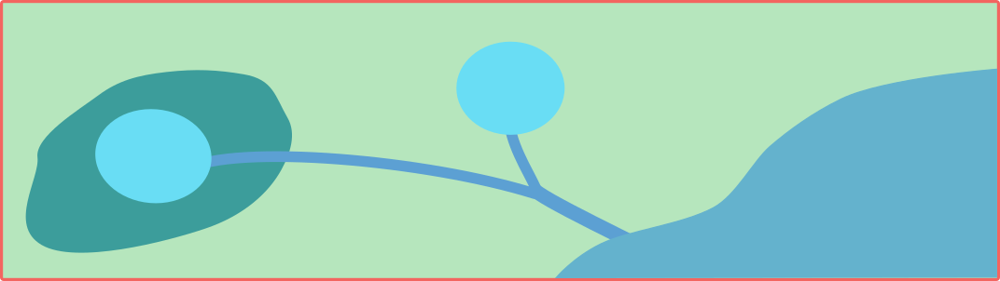

Scenario Theta¶
This scenario was created to serve as a unit test for control algorithms. In this scenario, two idealized basins (in parallel) of \(1000m^3\) are draining into a downstream water body. Outlets in the basins (\(1m^2\)) are at the bottom and can be controlled throughout the duration of the simulation.
{kind=link}
Objective¶
Maintain the flow of water at the outlet of the stormwater network below \(0.5 m^3s^{-1}\). The degree of success or failure of the algorithm to achieve the objective is computed based on the following metric.
States¶
Water levels (\(m\)) in the two basins at every step, indexed by the order of the basin are defined as the states in this scenario.
Control actions¶
Percent of valve opening \([0,1]\) at the outlet of each basin.
Example: Equal-filling Controller¶
import pystorms
import numpy as np
import matplotlib.pyplot as plt
%matplotlib notebook
env = pystorms.scenarios.theta()
done = False
while not done:
done = env.step(np.ones(2))
print("Uncontrolled Performance : {}".format(env.performance()))
Uncontrolled Performance : 0.1296391721430919
Lets take a look at the network outflows in the uncontrolled response
plt.plot(env.data_log["flow"]["8"])
plt.ylabel("Outflows")
Text(0, 0.5, 'Outflows')
Now, lets see if we can design a control algorithm to maintain the flows below \(0.5 m^3s^{-1}\)
Design of such a control algorithm can be approached in many ways. But the fundemental idea behind any of these algorithms would be to hold back water in the basins and coordinate the actions of these basin such that their cummulative outflows are below the desired threshold. In this example, we will design a simple algorithm that achives this.
def controller(state, target, MAX=2.0):
fd = state / MAX
avg_fd = np.mean(fd)
potential = fd - avg_fd # [<0, 0, <1]
for i in range(0, 2):
if potential[i] < -0.001:
potential[i] = 0.0
elif potential[i] < 0.001 and potential[i] > -0.001:
potential[i] = avg_fd
if sum(potential) > 0.0:
potential = potential / sum(potential)
actions = np.zeros(2)
if state[0] > 0.00:
flow0 = target * potential[0]
actions[0] = min(1.0, flow0 / (1.00 * np.sqrt(2.0 * 9.81 * state[0])))
if state[1] > 0.00:
flow1 = target * potential[1]
actions[1] = min(1.0, flow1 / (1.00 * np.sqrt(2.0 * 9.81 * state[1])))
return actions
env_controlled = pystorms.scenarios.theta()
done = False
while not done:
state = env_controlled.state()
actions = controller(state, 0.50)
done = env_controlled.step(actions)
plt.plot(env_controlled.data_log["flow"]["8"], label="Controlled")
plt.plot(env.data_log["flow"]["8"], label="Uncontrolled")
plt.ylabel("Outflows")
plt.legend()

print("Controlled performance: {} \nUncontrolled performance: {}".format(env_controlled.performance(), env.performance()))
Controlled performance: 0.0
Uncontrolled performance: 0.1296391721430919
Controller is able to maintain the outflows from the network below the desried threshold.